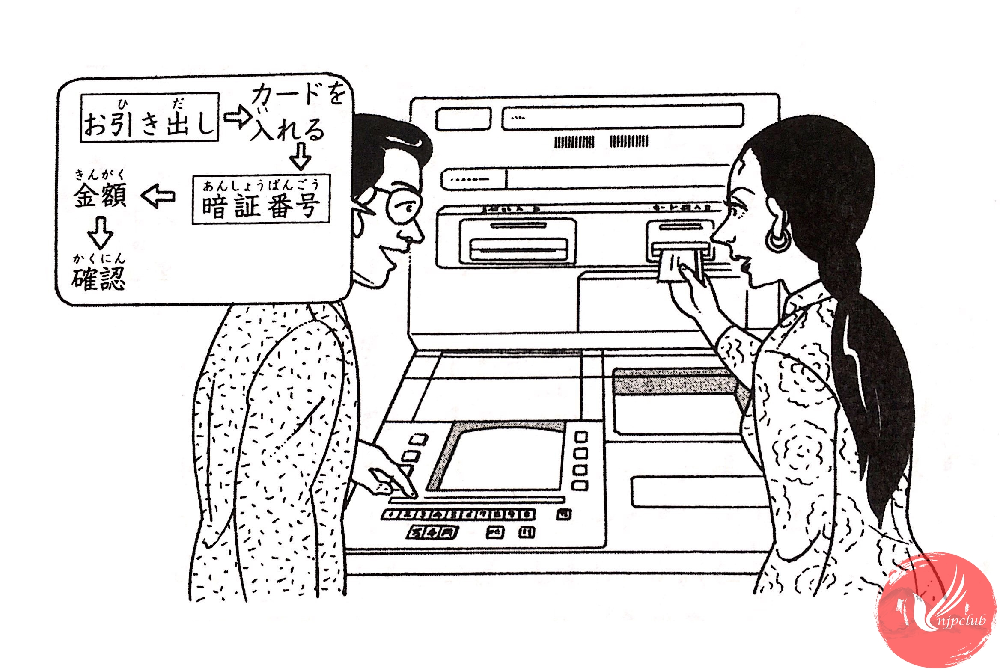

| マリア： |
すみませんが、ちょっと 使い方を 教えて ください。 |
| 銀行員： |
お引き出しですか。 |
| マリア： |
そうです。 |
| 銀行員： |
じゃ、まず ここを 押して ください。 |
| マリア： |
はい。 |
| 銀行員： |
次に キャッシュカードを ここに 入れて、暗証番号を 押して ください。 |
| マリア： |
はい、押しました。 |
| 銀行員： |
じゃ、金額を 押して ください。 |
| マリア： |
5万円ですが、5･･････。 |
| 銀行員： |
この 「万」「円」を 押します。 |
|
それから この [確認]ボタンを 押して ください。 |
|
| マリア： |
はい、どうも ありがとう ございました。 |